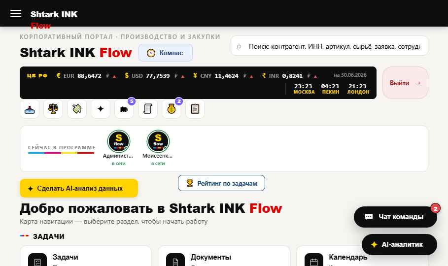
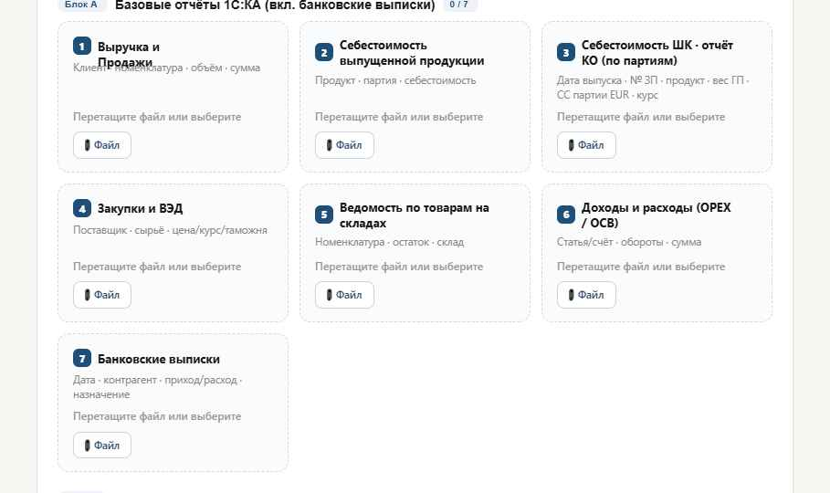
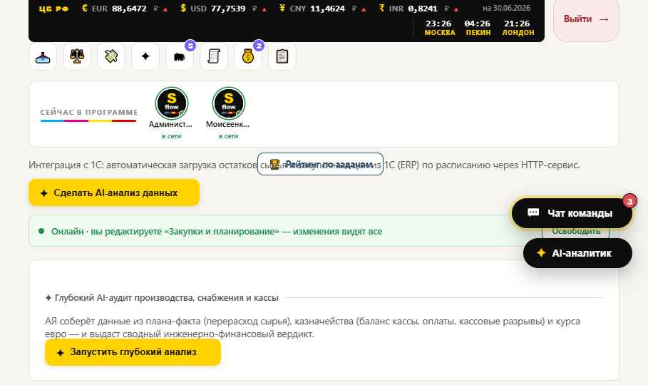
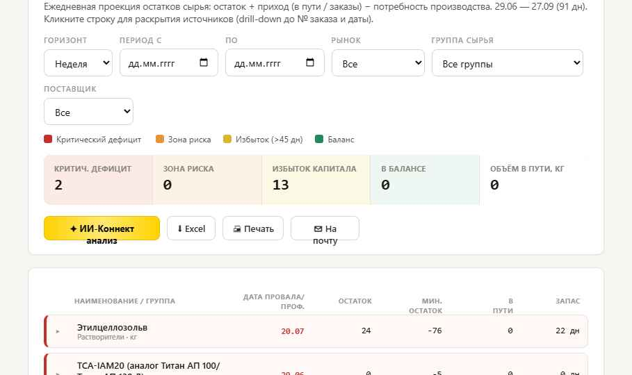
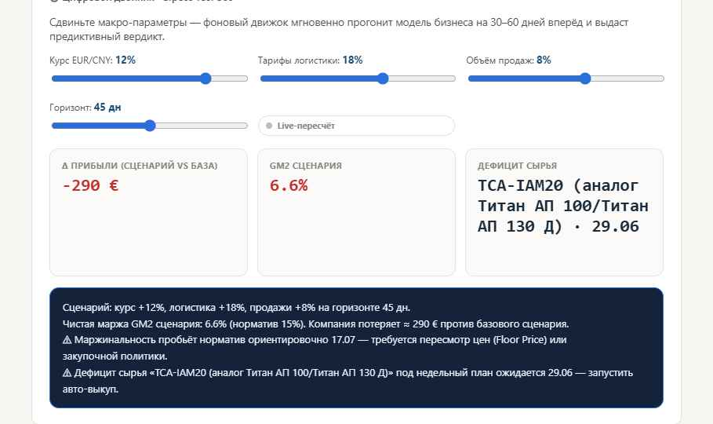
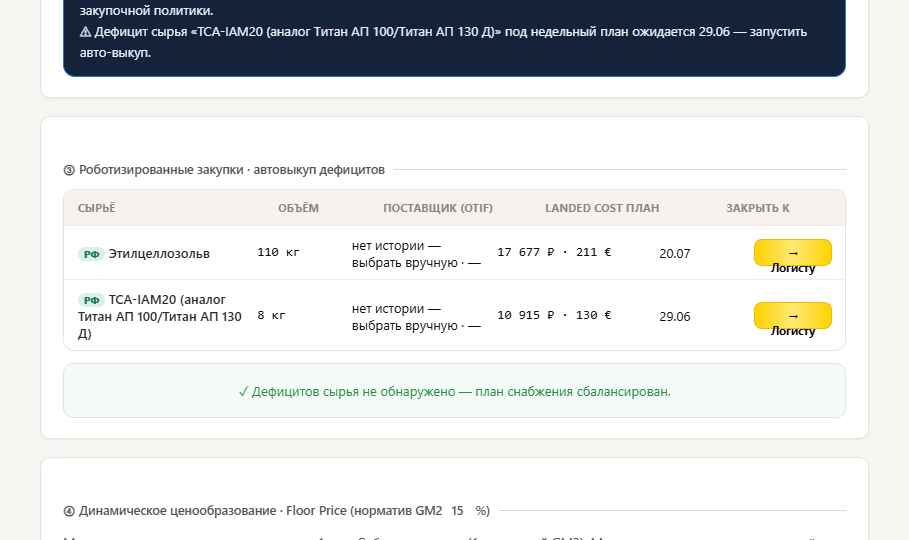
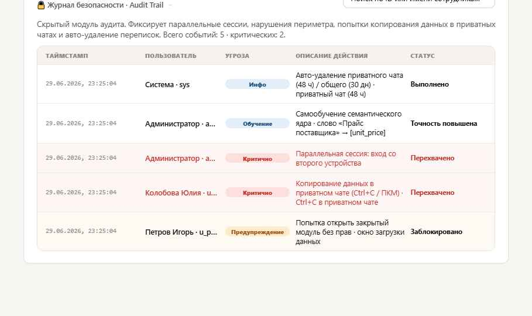
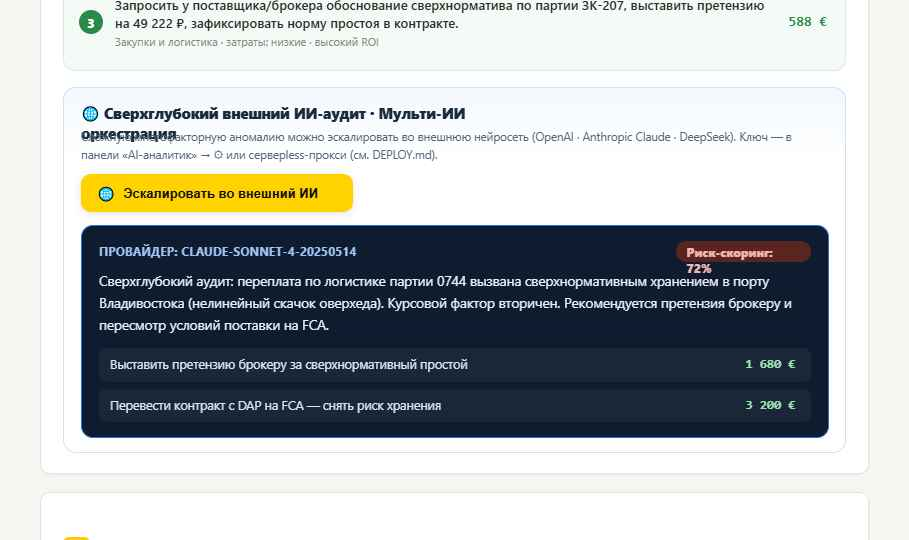

Себестоимость считается один раз в ядре и используется всеми отчётами — цифры не расходятся между модулями.
Любой денежный отчёт мгновенно пересчитывается в рубли или евро, с НДС и без, по курсу ЦБ на дату операции.
Любое изменение каскадом обновляет зависимые отчёты: Закупки → Склад → Производство → Доставка → Маржа → KPI.
Семантический аудит до первопричин, прогноз сценариев и роботизированные закупки дефицитного сырья.

EUR, USD, CNY, INR с динамикой и часами трёх столиц (Москва · Пекин · Лондон).
Онлайн-присутствие коллег, звёзды KPI у аватарок, приватные чаты.
Контрагент, ИНН, артикул, сырьё, заявка, сотрудник — из одной строки.
Кнопка «Сделать AI-анализ данных» доступна на любом экране.
Excel, CSV, PDF + банковские выписки. Семантическое распознавание колонок.
Дерево затрат: продукт → партия → сырьё. Партионный учёт и FIFO.
GM1 / GM2, drill-down, RUB/EUR, с НДС и без, удельные ₽/кг и €/кг.
Сквозной баланс снабжения на 45 дней, тепловая карта дефицитов.
Стресс-тест 360°, автозакупки, Floor Price, HR-трекинг задач.
Audit Trail: сессии, периметр, защита данных в приватных чатах.
Landed Cost РФ + ВЭД
Остатки сырья
План выпуска, СС 1 кг
Баланс снабжения
GM1/GM2, курсовые
Рейтинг, ★ звёзды

Выручка, Себестоимость, Закупки/ВЭД, Склад, OPEX/ОСВ, банковские выписки + любые кастомные формы.
Бросьте PDF в любую зону — система извлекает текстовый слой и строит таблицу. Для сканов — OCR в почтовом роботе.
ИИ распознаёт шапку по смыслу и по типу данных; вы при необходимости поправляете — система запоминает.
«Запустить сквозной пересчёт» — каскад обновляет всю аналитику.
Дерево затрат из 1С: продукт → партия производства → аналитика затрат → сырьё + транспортные и доп. расходы.
Где партий нет — списание First In, First Out по датам приходов; средневзвешенная СС 1 кг на дату выпуска.
Маржа, рентабельность, ценообразование и план-факт берут СС только отсюда — за совпадающий период.
Загрузки хранятся структурно (год → месяц); повторная загрузка месяца обновляет данные, а не плодит дубли.

От группы продуктов до номера партии (или временного блока FIFO) — видно, из чего сложилась маржа каждой сделки.
FX P&L не размывается в себестоимости: курсовая разница оплаты выносится в отдельный финансовый результат.

Остаток(день) = остаток вчера + приход (в пути / заказы) − потребность плана производства.
4 уровня: дефицит · риск задержки · избыток капитала · баланс. Критичные строки — сверху.
Клик по строке раскрывает даты приходов, первичный документ и партию / FIFO-блок.
Клик по красной ячейке — оценка потерянной маржи и рекомендация дозаказа.
Курс EUR/CNY, тарифы логистики, объём продаж, горизонт 30–60 дней — модель пересчитывается на лету.
Δ прибыли, GM2 сценария, дата пробоя норматива маржи и дата/материал будущего дефицита.
Режим мгновенной реакции на каждое движение ползунка.


На красный дефицит — готовый проект «Заказ поставщику»: объём перекрытия, лучший поставщик по OTIF, плановая Landed Cost. Кнопка «→ Логисту».
Floor Price = СС ÷ (1 − целевой GM2). Сделку ниже floor система блокирует и пишет в журнал.
Просроченные и заблокированные задачи — на отдельную панель руководителю.
«Удорожание партии НЕ из-за цены фабрики и НЕ из-за курса — причина сверхнормативная логистика, переплата N ₽».
Несанкционированная скидка: «план по выручке выполнен ложно, потеряно N € чистой маржи — пересчитать KPI».
Ранжированы по чистой марже в евро — максимальный эффект при минимальных затратах сверху.
Левенштейн + коэффициент Дайса по биграммам — устойчивы к опечаткам и перестановкам слов.
Каждое ручное сопоставление обучает ядро. Распознанное без исправлений — повышает уверенность правила.
Стабильное правило повышается до глобального и работает для обеих компаний.
В Excel-отчёте — % распознавания без участия человека (целевой порог > 95 %).

Финансовые и админ-модули скрыты от рядовых ролей — закрытый раздел отдаёт страницу «404».
Параллельные сессии, попытки открыть закрытый модуль, копирование данных в приватных чатах (Ctrl+C / ПКМ).
Приватный чат — 48 ч, общий — 30 дней; каждое удаление логируется.
По ID или имени сотрудника; критические угрозы подсвечены.
Тёмно-синяя шапка #1F4E78, итоги #D9E1F2, сигнальные зелёный/красный для KPI и статусов.
Строки «ИТОГО» считаются формулами Excel (SUM), а не текстом.
Разделитель тысяч, валюты ₽/€, проценты; метка режима «Валюта · Контур · Метрика · Курс ЦБ» в шапке.
Маржинальность, Себестоимость, План-Факт закупок, AI Insights, AI Autopilot Report, Задачи, Капитал в пути.
«На единицу» (₽/кг, курсы, %) не суммируются; итоги по колонке — суммируются. Автоширина столбцов.

Сложную аномалию система эскалирует во внешнюю нейросеть — OpenAI GPT, Anthropic Claude, DeepSeek или OCR-сервис — с риск-скорингом и точками роста.
Внешний ИИ зовётся только на многофакторные, нелинейные, кросс-модульные аномалии — не на каждую мелочь.
API-ключи — в Environment Variables серверless-прокси или GitHub Secrets; в браузер и репозиторий не попадают.
Боевая база и настройки админа — в облаке (Firebase). Обновление кода на GitHub Pages их не затрагивает.